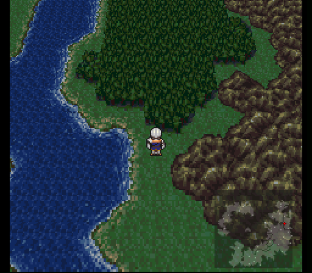
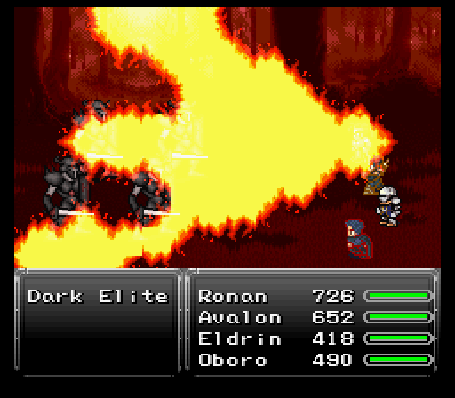
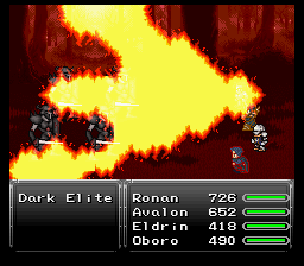
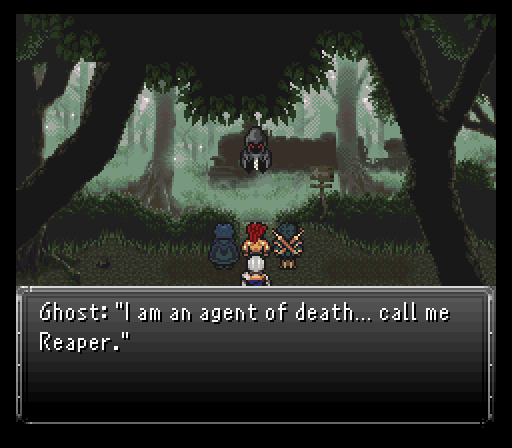
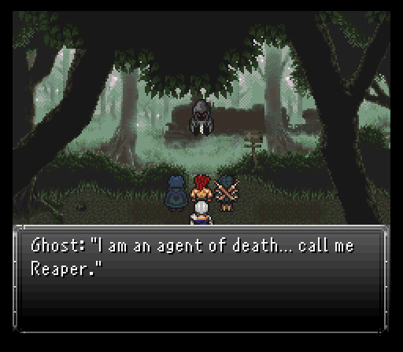
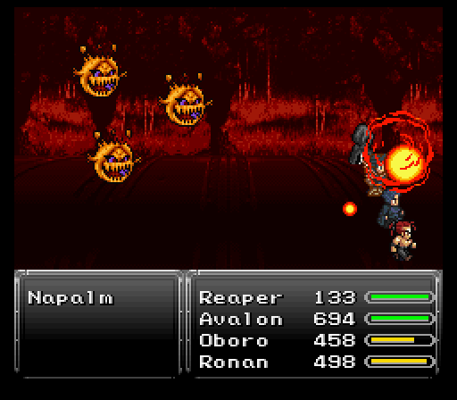
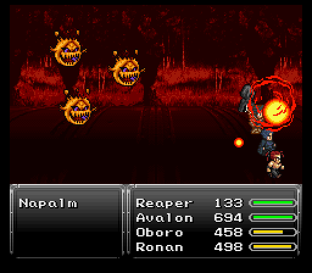
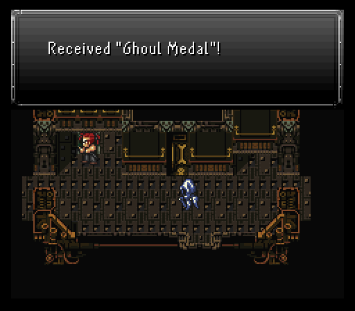
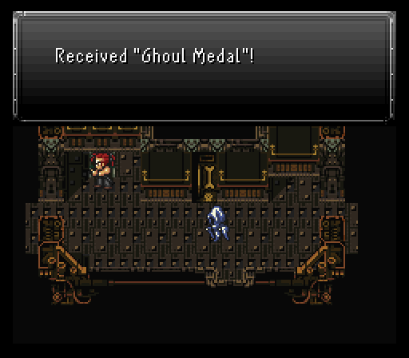
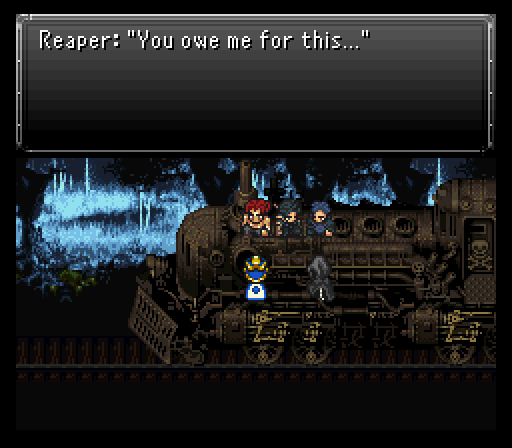

Part 7B: The Epic of Ronan II
Dreadwood Forest
Ronan and his comrades are all done raising hell in the Imperial base. The next task is to get back to Fraust, but the only option available is to head through Dreadwood Forest. I'm sure THAT'S going to be ending well!
Joining for this run is Avalon's ally Eldrin. He's like our first soldier buddy right after the events at Durandal Castle. Only the Fight & Item commands, but he brings along the Elven Beads in one of his relic slots which grants a nice boost to physical evade. If you removed Avalon's Sange sword earlier, you should put it back on him for the next slew of monsters to come.
As for reaching Dreadwood Forest, just keep walking north & east until you cross a bridge. Right after crossing it, go north to find the entrance. You'll probably encounter some Geemers along the way, along with previous monsters.
So as you might have guessed, the majority of monsters here are undead. If Ronan still has the Spider Fangs equiped, swap them out. His Aura Blast will be extremely useful for quite a while. As for the monsters, there are Shades that cast low level elemental spells, tanky Ents that can use Plague and Frenzy, and Skeletons who throw their bones at you. Kusi Mitamas (from Megami Tensei) use Acid Rain and other status-inflicting attacks. You can also encounter Red Crawlers from Cloud's scenario and a rare encounter that consists of Demon Eyes and a Spectre. Demons Eyes are pathetically weak, but their special attacks can add up since they come in threes, and Spectres are basically just stronger versions of Shades.


In this mod, with a few exceptions, undead monsters will perish if they are depleted of their mp. And they are weak to the holy elemental. One of Avalon's spells he comes with, Expel, attacks a monster's mp and just so happens to be holy elemental, so it may be practical at times to take out undead monsters that way.
Two obscure treasures:

This forest does throw a few oddballs at you. First, ignore the Gengar that trolls you, then at the healing spring, you'd expect to go south to proceed deeper in. Instead, you need to go east. It's all vanilla routing from here, but you barrel right into the second oddball...a group of elite Imperial soldiers wants some revenge for the Imperial base. Before this battle I recommend putting a Paladin Icon relic on Ronan.
These soldiers are called Dark Elites. Ronan can tank all the physicals and the enhanced physical skill (Shadowblade) easily. They might try some poison magic in Virus too, but it's not too severe for single target damage, maybe 200 at worst. If Oboro has any Fire Scrolls, now would be a great time to use one.
 

Once the soldiers drop, it's very clear the crew is being hunted if there's elite soldiers being sent out. Trying to fight them AND the ghosts? Not good at all. Nor is fighting all of them and a horde of zombies....which the corpses of the previous slain enemies become and attack the party. Zombies still have their biting capabilities to produce more of their kind. With four of them around, things can turn sour very fast if several of them all try to bite your team early on.
The solution? A new item I've got in the bag, Holy Water. Use this on an undead enemy and they die instantly. Using two here makes managing them so much easier.
After the battle, go back to the healing spring to refresh if needed, otherwise take the northeastern exit to find a kid in the forest. Ronan puts two and two together to realize that it's none other than the kid that left the orphanage on a quest for revenge, Arc. Logical thing to do is to go help the kid, right?
 

Well, someone's stopping the party and it's a ghost of sorts who calls himself Reaper. He claims that the party will die if they head forward. Arc apparently is safe due to a talisman he carries with him.
How's the team going to proceed then? So long as Reaper can collect their souls when they die, he'll guide them through the death zone. Doubly so when he takes a keen interest in Avalon's soul as he's not a pure bred human, that's for sure.
As for Eldrin? He's gonna run off and try to slow down the Imperials as long as possible, death be damned. Will we actually see him again though? Only time will tell.
Skull Train
Got a spooky train to hop on today, but first, let's talk a bit about our guide through this train, Reaper.
Like Astral and all the NPC guards, Reaper's sadly a temporary party member for this run, but damn can he get the job done. His defensive stats allow him to sit in the front row without getting pasted instantly by physicals. Not quite as defensively bulky as Ronan, but it gets the job done.
Reaper's gear is pretty solid too. His Soul Harvest weapon has a good kick to it and can randomly cleave an enemy in two (aka instant death), his Exodus Token relic blocks instant death moves, and his Serpent Mask allows him to pull some massive shenanigans with the poison ailment. The Serpent Mask absorbs poison, but only the element and NOT the ailment. This means inflicting poison on him actually grants a slowly rising hp regen that can stack with normal regen.
Besides that, Reaper has two unique commands. Force is just a simple damage move that hits all enemies and does split damage like when you multi target spells, meaning it hits harder if only one enemy is alive since you can't switch off its initial AoE targeting.
The other? The source of why he's so good, his Souls command. Basically Gau's Rage command from vanilla, but without losing control when selecting what enemy's soul he wants to mimic. What that means is that he can, say, use a soul like Sentry to provide a little early battle support, then switch to a more offensive soul like Geemer or Defender.

With so many souls at his fingertips, mentioning every good one for Reaper would take too long. Some of the best ones right now are as follows...
- CursedDoll - Death (can be useful against Napalms)
- Defender - Scorch, gain Shell
- Executor - Storm, gain Float
- FungiBeast - Freeze
- Geemer - Skewer (Physical strike that's roughly 3x as powerful as a regular attack)
- M-TekArmor - Magitek Laser, gain Protect
All in all, Reaper is a very good character that's able to change his soul using tactics on the fly depending on the situation. He can utilize more souls by killing new enemies. No more leaping on random enemies to get skilled!
As for the undead enemies skulking around the train, take every fight seriously. Several enemies pack damaging AoEs if left alone for too long and it's the kind of damage Avalon is going to struggle to keep up with if too many AoE the team instantly. Luckily, you should have some Holy Water kicking around you can use to thin the undead horde if you feel you're going to get overwhelmed.
The grey ghosts walking around are hostile, same as the skeletons. The purple ghosts are Eidolons, and are a couple levels higher than the other monsters, therefore a bit stronger. They use a spell called Timebomb that either slows, hastes, or stops the target. They will counter Havoc with Expel, which will hurt Avalon's mp. The blue ghosts are friendly and will talk to you. And the yellow ghosts walking around are merchants that will sell you items, including Holy Water and Shurikens.
The random monsters consits of your stereotypical Ghosts, Shades and Skeletons again, Gravelords (from Dark Souls) who use Splash and can inflict petrify which is the most worrying, and Executors that use Drain a lot and can inflict berserk status. And of course there are Zombies. Inside the caboose room and outside the train you'll encounter Napalms that use Wildfire which hurts like hell, and they have a chance to self-destruct upon getting attacked...so you'll want to take them out hard and fast, hopefully without triggering them, or it'll cost you a Recharge. Unlike every other monster on this damn train, Napalms are susceptible to death, so you can try the CursedDoll soul with Reaper and hope it uses Death to take them out instantly. If it does the regular attack instead, there's still a chance Reaper will slice them in half anyway.
 

One new thing added to this train is a compartment on top of the train car right before a ghost filled interior. If you fall through it, it'll open a hidden wall outside the room with the first save point. Behind this wall is a Ghoul Medal, making the wearer undead like the rest of the rabble, but grants a 12.5% boost to max hp + three buffs when low on hp (Protect/Shell/Wall). I put it on Oboro just because it seems fitting. Keep in mind that with this on, if the character dies from Condemned status, they will instead be brought back to life with full hp!
 

More bum rushing through this spooky train. Most of the encounters are relatively smooth sailing in this segment, especially since I had Reaper settle on a constant enemy's soul to spam for the battles, Overseer. Its special skill is Pitfall Trap, an instant death move against an enemy.
Starting out on the train car I'm on, triggering the ghost to block your way back outside requires you to head west past a bunch of wandering spooks who can initiate combat with you if they feel like it. Speak to the purple ghost and it'll warp back to the door where you can talk to it once more to make it fight you.
What follows in the cutscene after is a case where some simple word changes really drives home the creepy factor here. The myriad of ghosts chanting "DIE..." as they lurch closer drives home the fear factor...as does another ghost in the same garb as Reaper.
Once the team does some train car hopping and detaches one of them to lose the ghost horde, Reaper mentions the other black clothed ghost is his direct soultaker rival Mr. Grimm. Turns out he too wants the team's souls, but good luck while Reaper is around.
Note: While outside, search the broken parts of the train roof accessible by ladder to find a Might Tab and a Scrap Metal.
Shortly after exiting outside, someone else shows up...Arc. Clearly someone in our party killed his mother because he calls someone a murderer before initiating combat. You'll find Arc literally only attacks Oboro.

Once Arc get his ass kicked, he runs off and you can move west into the diner car, which apparently got the Restaurant: Impossible treatment in this mod, aptly named the Ghastly Garden. Free healing here so it makes the train a good spot to do some grinding. Do make sure to enter the diner car from the western entrance so you can grab the Oracle Ring relic which raises magic damage and has a more powerful effect if paired up. This goes to Ronan immediately.
Soon after picking that ring up, Ronan hits level 17 and picks up a new Combo skill, the fire based Rising Phoenix. Easy to enter set of inputs (right, up, left, down, A) and it hits all enemies.
In the next train car with the skeleton running around, the eastern room has a chest, but someone interrupts shortly before you can open it. He wants to kill your team to get the treasure, but lord knows if that's going to help him.

This so called demon goes by the name Olbohn and he's a credible threat as evidenced by his opener, Chaotic Disaster. This targets everyone and if anyone gets hit, they'll be inflicted with a ton of status ailments. Muddle & condemned are a couple ugly ones as is pig.
Once that passes, Olbohn starts busting out some actual damaging moves. He can use Lifeshaver to do a good 400-500 damage or so and add it back to his own hp pool, Surge Breaker for a typical strong physical strike, and some elemental AoE attacks like Razor Leaf as well as fire spells. Also Timebomb, Black Shock (halves level), and Corrosive Fluid. No other ailment trickery besides sometimes using Entwine to inflict slow on everyone. He'll only use Razor Leaf after being attacked a certain amount of times, so when he does use it you'll have a bunch of turns again before the next time. When his hp is very low, he'll attack with four physical attacks in a row.
Your initial strategy is going to be to run damage control on anyone struck by the opener. If you have a Remedy or two kicking around, that's the best way to rid anyone of all the nasty ailments aside from condemned.
As for dealing damage, Ronan gets to front all the work by spamming Meteor Smash while the rest of the team throws Potions and only attacks if a chance presents itself. Olbohn is weak to fire, so Reaper can use the Defender Soul to cast Scorch. If Oboro has any Fire Scrolls it's worth using it for big damage. Oboro can also swipe a Magic Tab from Olbohn so he should do that as quickly as possible. Olbohn has fairly high magic evasion, so Havoc and Force might miss more so than usual. Speaking of Havoc and Force, Olbohn has a 1/3 chance to counter either with Imp, so be prepared for that as much as possible, or consider a different method of attack.
Once Olbohn has had enough, he flees and takes a supposed Jade Skull with him, but he does drop his other item, an Angel Pendant relic which grants the wearer a permanent float & regen effect. I'll put it on Avalon so his Havoc damage stays topped off.
Moving west, Arc pops up again for another round of ass kicking, then there's a room in a train car with several chests. One of them has a monster inside that's easily killed (but drops a Bolt Scroll) while another holds a Necronomicon, an item that revives a character to full health.
After running into Arc for a third time, Oboro steps forward to confront the kid. Before a fight can really break out, someone intervenes by the name of Charlotte, Arc's mother.

Charlotte drops a very important piece of information...it wasn't Oboro who killed her, but rather Oboro's accomplice. She begs Arc not to go on this quest for revenge, then willingly gives up her soul to Reaper in exchange for Arc's safety in getting off the train. Reaper accepts, then states he can't directly interfere with the Skull Train. Arc's relic though will keep everyone safe.
With a bit more chatter, Arc somewhat reluctantly joins the team.
Almost off this train finally, but first, let's talk about the kid who PROBABLY wants to be a maverick hunter when he grows up, Arc.
Arc right now has two things going for him. Firstly, he can equip a huge range of gear as befitting of an Onion Knight. That means he can equip the same stuff that Aurora only could before and, as such, learn a few valuable spells in Dispel, Teleport, and Vanish.
Secondly, he has the Runic command. This lets him absorb the next spell sent at the party and gain hp back equal to 4x the spell's mp cost. And unlike the original game, it will not absorb your own characters' spells and it stays charged once used so you can then do other attacks the next turn, until it is triggered and then you will need to reapply it once again.
That being said, Neko is in the save point room and has some interesting gear, such as Boomerangs and White Capes. Both Oboro and Arc can use the Boomerang, which yields the same amount of damage from the back row, and having another White Cape relic can help by adding additional protection for the upcoming boss fight, though it's not entirely necessary.

The goal for the team is to head to the lead train car, hit the first and third switches inside, then head to the smoke stack up front and hit a switch. This does cause everyone to tell Arc to hide inside cause lol he must be protected. Poor kid.
Though to be fair, the Skull Train comes alive, ready and raring to kick ass, but it's not alone. Mr. Grimm comes floating on in to join the battle too.

The duo of Mr. Grimm & the Skull Train seems like it'd be fierce, but in reality it's only the Skull Train that poses any major threat. Mr. Grimm throws some weak magic and his physicals aren't much better, even his named physical attack Burial Blade. His regular hits do carry a chance of instantly killing the target though.
Mr. Grimm also starts with the image status active. While image is going strong, your physical strikes are not going to connect, but they carry a chance of breaking the images.
As for the Skull Train, it fronts all the actual combat presence here. Carries the same Chaotic Disaster move as Olbohn, but also tosses in Poltergasm to hit everyone with some kind of annoying status ailment, which is why getting an additional White Cape isn't such a bad idea, not only for the status protection but for the extra magic block.
On the damage side of things, it has Nightmare Wheel (standard enhanced physical strike move), seemingly random Mega Volt counters, and a few AoEs in Frost Bite (weakest), Acid Rain (stronger), and Saintly Beam (strongest).
First thing's first...Mr. Grimm needs to be knocked out since he can and will revive the Skull Train if it dies first. You'll have to use moves that bypass the image status early on like Shuriken. After he goes down, he activates a reraise, but isn't getting enough hp back most likely before the finishing blow comes.
For the Skull Train, holy based moves work best on it. With the Oracle Ring, Ronan was hitting very close to or just over 1000 damage per Aura Blast used. So long as you got Avalon on full blown healing duties, Oboro shouldn't have to interrupt his offense much to toss an extra Poison or two.
Before the train crashes, steal some Scrap Metal from it.
After the fight, Mr. Grimm decides he's gonna paralyze and absorb everyone's souls. He completely forgot about Arc inside who tries to fend off Mr. Grimm with flying colors....the kind of flying colors that indicate a person's getting their ass kicked that is. However, Arc isn't alone. Reaper decides to warp in, clearly having enough of Mr. Grimm's shenanigans, and the second showdown with the evil soul-taking spirit commences.


For this fight, you only have Arc & Reaper to deal with the transformed Mr. Grimm. This fight is a big Runic spamming ground for Arc to thrive in. You'll notice that Mr. Grimm once again starts with Image status, so all physical attacks will miss. If you have a spare Diffusal Rod lying around you could toss it at him to remove the status instantly, or even better if you've managed to already learn Dispel with Arc just cast the spell.
While Mr. Grimm's damaging attacks other than his physical are few & far between, he can very seldomly cast Freeze. If you're not expecting this like I was, it can do close to 500 damage. He also has a 1/3 chance to counter Force with Freeze, so it's probably best to avoid using it and use Souls instead, unless Runic is active and you're pretty sure Mr. Grimm doesn't have another Freeze just around the corner.
Should you equip Arc with a Thief Knife and find an opportune time to use it, Mr. Grimm has a Quicksilver on his person, though it is a rare steal so it could prove a bit challenging to take.
With Arc on Runic bot duty, it falls to Reaper to get all the damage in. He should open with Sentry until he gets himself & Arc buffed up, then switch to M-TekArmor (for the auto protect) and Defender (for the auto Shell). Once those buffs are, spam either the Geemer soul or Force until healing is required. You'll also want to make sure that Arc is alive at the end as he'll earn a nice chunk of EXP. Now I don't recommend this at all, especially on the harder difficulties, but you could attempt to let Reaper become KO'd and finish the fight with just Arc alive to get even more EXP for him. Just be very careful because we certainly don't want to lose and have to fight the Skull Train again!
Once Mr. Grimm finally gives up, he'll drop a Magic Tab and presumably be gone forever. The scenes end after the fight with the train acknowledging their victory and agrees to let them off at the next stop....right as Avalon's wife & child hop on for their ride to the farplane. Dude just can NOT catch a break eh?
Ronan's trials & tribulations in the Skull Train are done, but there's one last obstacle between his party and the next town, Eternity Falls.